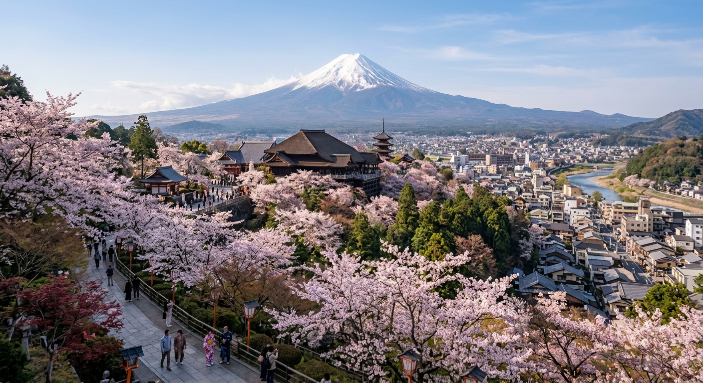

Главная страница
Япония
Список стран мира

Япония — островное государство в Восточной Азии, расположенное на огромном архипелаге в Тихом океане, состоящем из 6852 островов. Четырьмя крупнейшими островами являются Хонсю, Хоккайдо, Кюсю и Сикоку, на которые приходится более 95% всей территории страны. Столицей государства является мегаполис Токио — один из крупнейших и наиболее технологически развитых финансовых и культурных центров современного мира.
Рельеф Японии преимущественно гористый: более 70% площади занимают горы и возвышенности, многие из которых являются потухшими или действующими вулканами. Самой высокой и знаменитой вершиной страны является священная гора Фудзияма (Фудзи) высотой 3776 метров. Этот стратовулкан правильной конической формы на протяжении веков вдохновлял поэтов и художников и сегодня признан объектом всемирного наследия ЮНЕСКО.
Несмотря на скромную площадь и почти полное отсутствие полезных ископаемых, Япония смогла построить одну из мощнейших экономик на планете. Страна занимает лидирующие позиции в мире по производству высокотехнологичной электроники, робототехники, прецизионных станков и автомобилей. Культура Японии уникальна гармоничным сочетанием древних традиций синтоизма и буддизма с передовыми футуристическими технологиями.
© Разработчик: Чекин Н.Е., группа Б9124-09.03.04